※1月18日(六) 17:00圖片修正

舉辦期間限定活動「拯救！ 亞馬遜.com ～CEO危機2020～」！攻略以從者總動員挑戰的「配送關卡」來重整亞馬遜.com吧！
本活動中，攻略以從者總動員挑戰的亞馬遜.com配送關卡的話，能進行享受故事的主線關卡。
攻略配送關卡的關鍵是準備更多的從者！
強化更多的從者，在活動挑戰吧！
※本頁面皆為開發中圖片。會有與實際圖片相異的情況。
◆活動舉辦預定◆
2020年1月22日(三) 17:0020:00～2月5日(三) 11:59
◆活動參加條件◆
滿足以下條件的御主才能參加
・通過「特異點F 炎上汙染都市 冬木」
◆有關從者真名的注意◆
在2018年12月31日(二) 23:00以後新配信的主線故事及期間限定活動、一部份關卡、宣傳活動及召喚中，會顯示隱藏真名的對象從者真名。
※2018年12月31日(一) 22:59前已經配信的主線故事、復刻活動、一部份關卡中不在此限。
※1月21日(二) 17:00追記
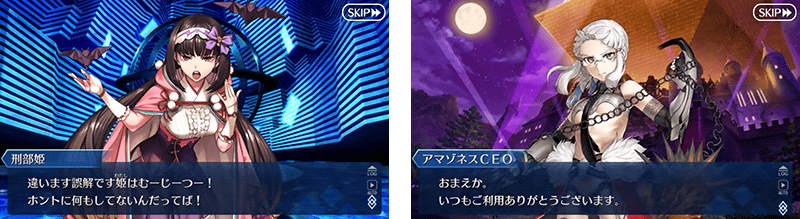
「終局特異點」通過水準的敵人出現！
【1月18日(六) 17:00追記】
期間限定活動「拯救！ 亞馬遜.com ～CEO危機2020～」是會出現「終局特異點」通過水準敵人的試驗活動。
舉辦期間限定活動「拯救！ 亞馬遜.com ～CEO危機2020～」聲援登入獎勵！
【1月18日(六) 17:00追記】
在2020年1月18日(六) 17:00～1月22日(三) 11:59期間舉辦期間限定活動「拯救！ 亞馬遜.com ～CEO危機2020～」聲援登入獎勵，登入的話可領取黃金果實5個。
藉此機會強化更多從者，在活動挑戰吧！
◆舉辦期間◆
2020年1月18日(六) 17:00～1月22日(三) 11:59
◆贈送對象◆
2020年1月22日(三) 11:59前遊玩「Fate/Grand Order」的所有玩家
| 登入時間 | 贈送內容 | 贈送對象 | |
|---|---|---|---|
| 1月18日(六) 17:00～ 1月22日(三) 11:59 |

|
黃金果實 5個 | 2020年1月22日(三) 11:59前遊玩「Fate/Grand Order」的所有玩家 |
※禮物只能領取1次。
【1月21日(二) 17:00追記】
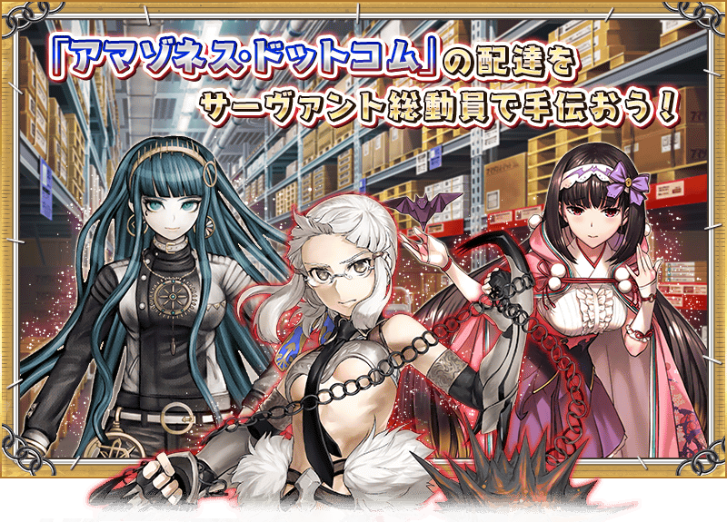 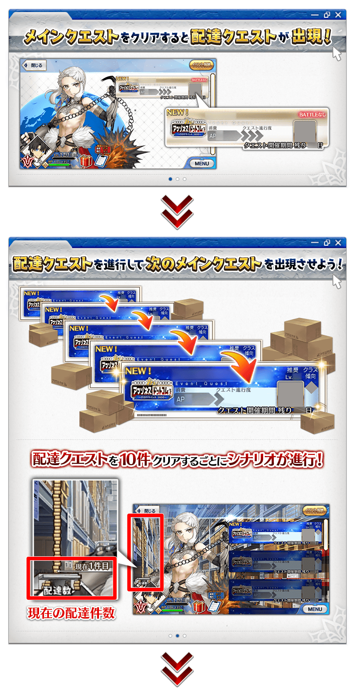 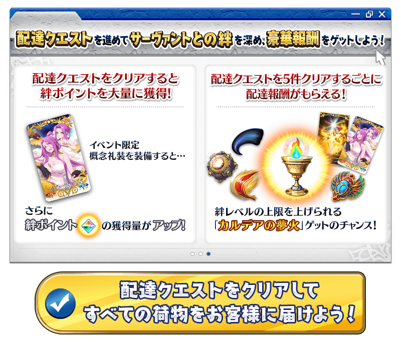
【1月21日(二) 17:00追記】
通過配送關卡的話，在關卡出撃的從者會變成「疲勞」狀態而無法出撃。
將未「疲勞」的從者替換入編成，挑戰下個配送關卡吧！
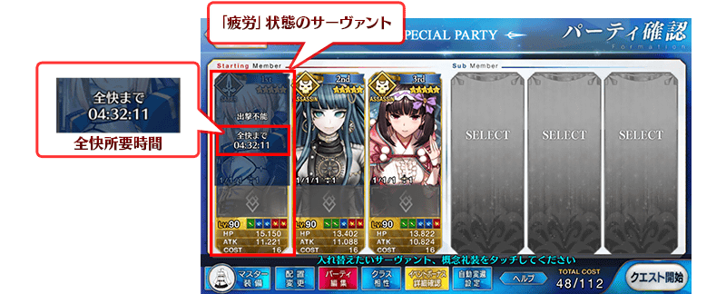
※只有戰鬥勝利時會變成「疲勞」狀態，敗北或撤退的情況不會變成「疲勞」狀態。 ※持有好幾位同樣從者的情況，未出撃的同從者也同樣變得無法出撃。(就算不同再臨階段的情況也同様會變成「疲勞」狀態。) ※適用「疲勞」狀態的只有期間限定活動「拯救！ 亞馬遜.com ～CEO危機2020～」內，平常的主線關卡和強化關卡等常駐的關卡為對象外。
【1月21日(二) 17:00追記】
從者的「疲勞」狀態會隨著時間經過來回復。請注意無法透過道具和令咒等進行回復。
還有，在進行主線關卡所開放的「放鬆施設」設定從者的話，能加快「疲勞」狀態的回復時間。
讓「疲勞」中的從者於施設休息，更快變得可再出撃吧！
※「疲勞」狀態要「全回復所需時間」變成0:00:00才回復結束。 ※施設使用中的從者能任意替換，加快回復時間效果於休息途中停止的時間點會消失。 ※請注意施設使用中的從者無法移動到靈基保管室。 ※請注意使用裝置的時間與設定未設定成「自動」的情況，會有回復為止的時間未正確顯示的情況。
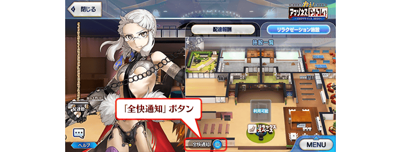
◆關於施設使用時的「全回復通知」◆
「全回復通知」為ON的狀態下，在施設設定從者後結束程式的話，在施設設定的從者全員全回復時，變得會收到推送通知。
※使用本功能時，請變更使用裝置中收到從程式的通知設定。就算本功能為ON的狀態，在使用裝置設定成不收到通知的情況，也不會顯示推送通知。
◆施設與從者的相性◆
「放鬆施設」內的施設會透過主線關卡的進行而增加。
各施設有著與從者的相性，設定相性良好從者的情，會更縮短回復時間。
儘可能選擇與從者相性良好的施設，更有效率回復「疲勞」狀態吧！
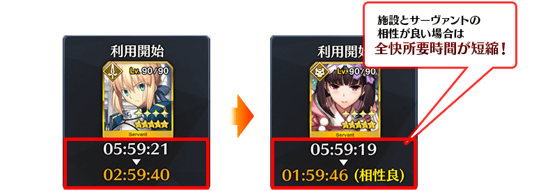
【1月21日(二) 17:00追記】
期間限定活動「拯救！ 亞馬遜.com ～CEO危機2020～」中，於「從者選擇畫面」的「排序順序的設定」追加「全回復所需時間順序」。「智慧排序」功能為ON的話，變得會考量是否「疲勞」狀態來排序，可優先顯示能出撃的從者。
另外，在為了疲勞回復使用各施設時，選擇「全回復所需時間順序」且「智慧排序」功能為ON的話，變得會考量與施設的相性，以回復效率高的順序優先顯示「疲勞」狀態的從者。
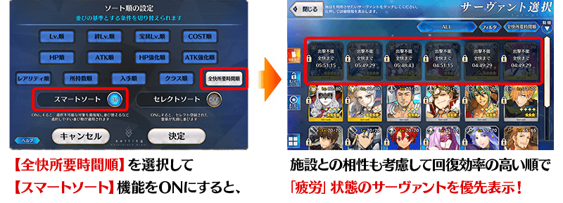

【1月21日(二) 17:00追記】
除了期間限定活動「拯救！ 亞馬遜.com ～CEO危機2020～」一部份的關卡外，與平常的隊伍編成不同，無法選擇支援從者做為隊伍的成員。
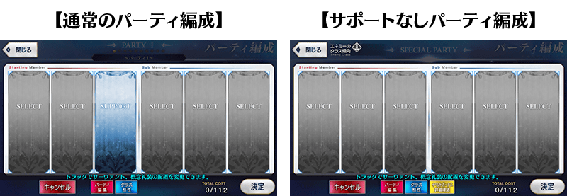
【1月21日(二) 17:00追記】
以通過至期間限定活動「拯救！ 亞馬遜.com ～CEO危機2020～」尾聲(エピローグ)及「終局特異點」御主做為對象，開放高難易度的「挑戰關卡」。
「挑戰關卡」就算通過後也不會消失，能無數次挑戰，可以變更從者和概念禮裝的組合後再次挑戰。
「挑戰關卡」中可使用好友的支援從者，就算「疲勞」狀態的從者也可在關卡出撃。
另外，就算通過「挑戰關卡」從者也不會變成「疲勞」狀態。
※關卡通過報酬、戰利品、御主EXP、魔術禮裝EXP、絆點數只可在初次通過時獲得。
◆挑戰關卡開放時間◆
2020年1月22日(三) 17:0020:00～
◆挑戰關卡參加條件◆
滿足以下條件的御主才能參加
・通過期間限定活動「拯救！ 亞馬遜.com ～CEO危機2020～」的尾聲(エピローグ)
・通過「終局特異點」
◆挑戰關卡初次通過報酬◆
傳承結晶 1個
【1月21日(二) 17:00追記】
裝備可靠通過配送關卡來入手的活動限定概念禮裝「★5(SSR)セラピューティック・スパ」的話，在期間限定活動「拯救！ 亞馬遜.com ～CEO危機2020～」中絆點數的獲得量會提升！
|
★★★★★SSR |
【1月21日(二) 17:00追記】
期間限定活動「拯救！ 亞馬遜.com ～CEO危機2020～」中每通過5件配送關卡，能領取配送報酬。
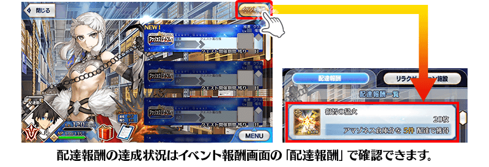
| 件數 | 配送報酬 | 個數 | |
|---|---|---|---|
| 第5件 |

|
睿智的猛火ALL★4(SR) | 20 |
| 第10件 | 混沌之爪 | 5 | |
| 第15件 |
|
睿智的猛火ALL★4(SR) | 20 |
| 第20件 | 活動限定概念禮裝★5(SSR)「セラピューティック・スパ」 | 1 | |
| 第25件 |
|
睿智的猛火ALL★4(SR) | 20 |
| 第30件 | 活動限定概念禮裝★5(SSR)「セラピューティック・スパ」 | 1 | |
| 第35件 |
|
睿智的猛火ALL★4(SR) | 20 |
| 第40件 | 活動限定概念禮裝★5(SSR)「セラピューティック・スパ」 | 1 | |
| 第45件 |
|
睿智的猛火ALL★4(SR) | 20 |
| 第50件 |

|
迦勒底的夢火 | 1 |
| ??? | 原初的產毛 | 5 | |
| ??? | 活動限定概念禮裝★5(SSR)「セラピューティック・スパ」 | 1 | |
| ??? | 曉光爐心 | 5 | |
| ??? | 活動限定概念禮裝★5(SSR)「セラピューティック・スパ」 | 1 | |
| ??? | 智慧之聖甲蟲像 | 5 | |
| ??? |

|
英靈結晶・流星之芙芙ALL★4(HP) | 1 |
| ??? | 混沌之爪 | 5 | |
| ??? | 活動限定概念禮裝★5(SSR)「セラピューティック・スパ」 | 1 | |
| ??? | 智慧之聖甲蟲像 | 5 | |
| ??? |
|
迦勒底的夢火 | 1 |
| ??? | 原初的產毛 | 5 | |
| ??? |

|
英靈結晶・日輪之芙芙ALL★4(ATK) | 1 |
| ??? | 曉光爐心 | 5 | |
| ??? |
|
英靈結晶・流星之芙芙ALL★4(HP) | 1 |
| ??? | 混沌之爪 | 5 | |
| ??? | 智慧之聖甲蟲像 | 5 | |
| ??? | 原初的產毛 | 5 | |
| ??? |

|
英靈結晶・日輪之芙芙ALL★4(ATK) | 1 |
| ??? | 曉光爐心 | 5 | |
| ??? |

|
傳承結晶 | 1 |
| ??? | 混沌之爪 | 5 | |
| ??? | 煌星的碎片 | 5 | |
| ??? | 原初的產毛 | 5 | |
| ??? |
|
英靈結晶・流星之芙芙ALL★4(HP) | 1 |
| ??? | 曉光爐心 | 5 | |
| ??? |
|
英靈結晶・日輪之芙芙ALL★4(ATK) | 1 |
| ??? | 智慧之聖甲蟲像 | 5 | |
| ??? |
|
迦勒底的夢火 | 1 |
| ??? | 煌星的碎片 | 5 | |
| ??? |
|
傳承結晶 | 1 |
※配送報酬可在通過該配送關卡時獲得。
為了記念期間限定活動「拯救！ 亞馬遜.com ～CEO危機2020～」舉辦，自2020年1月18日(六)在迦勒底之門內開放全種類每天出現的關卡「蒐集種火」與「修練場」。
利用這點強化更多的從者，預備「拯救！ 亞馬遜.com ～CEO危機2020～」吧！
◆舉辦期間◆
2020年1月18日(六) 17:0020:00～1月27日(一) 11:59
※關卡通過報酬的魔力稜鏡只限初次通過時才可獲得。 ※請注意由於以期間限定出現的「蒐集種火」及「修練場」與平常每日出現的「蒐集種火」及「修練場」的關卡不同，不會繼承「關卡情報」。 ※舉辦期間中，不會重置關卡通過報酬。
【全天開放的蒐集種火一覧】
| 關卡名 | 可做為戰利品獲得 的主要道具 |
攻略推薦 職階 |
|---|---|---|
| 【活動舉辦記念】 週一 蒐集種火<槍・殺篇> 初級、中級、上級、超級 |
Lancer、Assassin、Berserker的經驗值卡 |   |
| 【活動舉辦記念】 週二 蒐集種火<剣・騎篇> 初級、中級、上級、超級 |
Saber、Rider、Berserker的經驗值卡 |   |
| 【活動舉辦記念】 週三 蒐集種火<弓・術篇> 初級、中級、上級、超級 |
Archer、Caster、Berserker的經驗值卡 |   |
| 【活動舉辦記念】 週四 蒐集種火<槍・殺篇> 初級、中級、上級、超級 |
Lancer、Assassin、Berserker的經驗值卡 | |
| 【活動舉辦記念】 週五 蒐集種火<剣・騎篇> 初級、中級、上級、超級 |
Saber、Rider、Berserker的經驗值卡 | |
| 【活動舉辦記念】 週六 蒐集種火<弓・術篇> 初級、中級、上級、超級 |
Archer、Caster、Berserker的經驗值卡 | |
| 【活動舉辦記念】 週日 蒐集種火<隨機篇> 初級、中級、上級、超級 |
Saber、Archer、Lancer、Rider、Caster、Assassin、Berserker的經驗值卡(隨機) | - |
※Berserker在所有每日關卡皆為有效職階。
【全天開放的修練場一覧】
| 關卡名 | 可做為戰利品獲得 的主要道具 |
攻略推薦 職階 |
|---|---|---|
| 【活動舉辦記念】 週一 弓之修練場 初級、中級、上級、超級 |
Archer的靈基再臨用道具、Archer的技能強化素材道具 | |
| 【活動舉辦記念】 週二 槍之修練場 初級、中級、上級、超級 |
Lancer的靈基再臨用道具、Lancer的技能強化素材道具 | |
| 【活動舉辦記念】 週三 狂之修練場 初級、中級、上級、超級 |
Berserker的靈基再臨用道具、Berserker的技能強化素材道具 | ALL |
| 【活動舉辦記念】 週四 騎之修練場 初級、中級、上級、超級 |
Rider的靈基再臨用道具、Rider的技能強化素材道具 |  |
| 【活動舉辦記念】 週五 術之修練場 初級、中級、上級、超級 |
Caster的靈基再臨用道具、Caster的技能強化素材道具 | |
| 【活動舉辦記念】 週六 殺之修練場 初級、中級、上級、超級 |
Assassin的靈基再臨用道具、Assassin的技能強化素材道具 | |
| 【活動舉辦記念】 週日 劍之修練場 初級、中級、上級、超級 |
Saber的靈基再臨用道具、Saber的技能強化素材道具 | |
※Berserker在所有每日關卡皆為有效職階。
【1月18日(六) 17:00追記】
做為期間限定活動「拯救！ 亞馬遜.com ～CEO危機2020～」的報酬，「★4(SR)彭忒西勒亞(黃金國的Berserker)」的靈衣開放權登場！
可入手上述靈衣開放權做為本活動的特定關卡報酬。
另外，想要靈衣開放的話，除了靈衣開放權外必須再加上一些開放條件。
◆有關靈衣開放權的注意◆
※本次追加的「★4(SR)彭忒西勒亞(黃金國的Berserker)」的簡易靈衣是伴随外觀變化一部份動作及語音。
※「★4(SR)彭忒西勒亞(黃金國的Berserker)」的靈衣開放權，只限期間限定活動「拯救！ 亞馬遜.com ～CEO危機2020～」的活動舉辦期間才能入手。
※就算是「★4(SR)彭忒西勒亞(黃金國的Berserker)」真名判明前的狀態也能進行靈衣開放。
※請注意未持有「★4(SR)彭忒西勒亞(黃金國的Berserker)」的情況，可入手靈衣開放權。但無法進行靈衣開放。
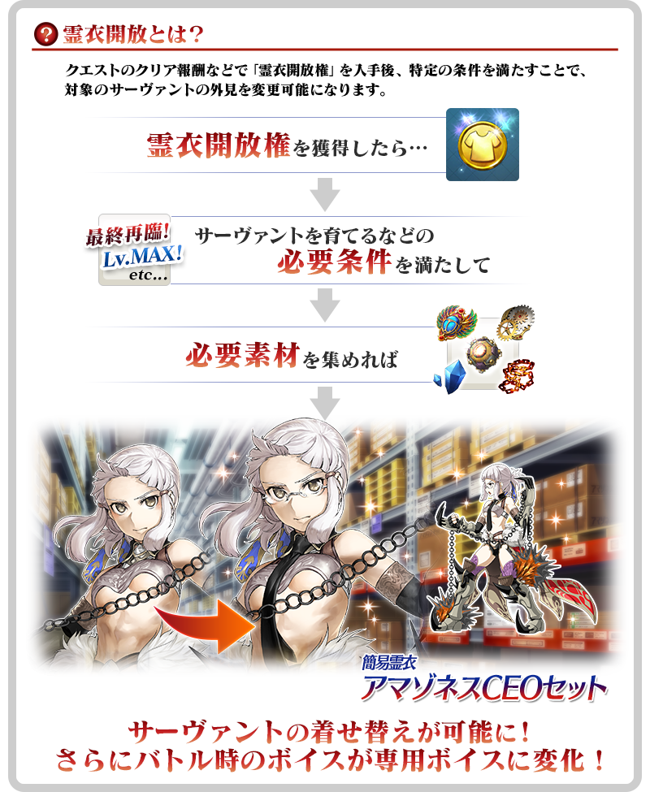

「靈衣開放」是自強化畫面進行。
※「靈衣開放」後會自動切換戰鬥角色和圖示。若想回到「靈衣開放」前的狀態和變成其他再臨階段的情況，可自從者詳細畫面變更。 ※進行「靈衣開放」也不會對職階和數值等有所變化。

【1月21日(二) 17:00追記】
介紹開放簡易靈衣「アマゾネスCEOセット」的「★4(SR)彭忒西勒亞(黃金國的Berserker)」寶具演出！
在「Fate/Grand Order」官方網站內的公告中，以影片公開寶具演出，敬請確認。

【1月18日(六) 17:00追記】
介紹在2020年1月22日(三)的更新追加的新功能。
◆追加時間◆
2020年1月22日(三) 17:00～(預定)
擴大可於「與從者的記錄」確認的情報！
在「與從者的記錄」中變得可閱覽新「暫時加入」「等級提升」和於個人空間(マイルーム)的對話。
※「暫時加入」只限一部份從者可選擇。 ※「等級提升」和於個人空間(マイルーム)的對話可指定從者的再臨階段來閲覧。
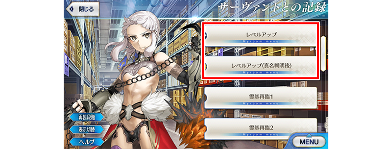
更容易使用支援選擇畫面的「清單更新鍵」！
點擊支援選擇畫面的「清單更新鍵」時，修改成可確認直到能進行清單更新的時間。
因此，變得能順暢進行支援從者的清單更新。
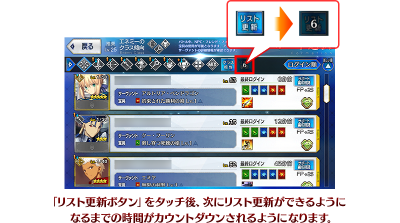
【1月21日(二) 17:00追記】
其他還有，期間限定「亞馬遜.com Premium Pick Up召喚(每日交替)」同時舉辦！
關於詳情，請自下述橫幅確認。